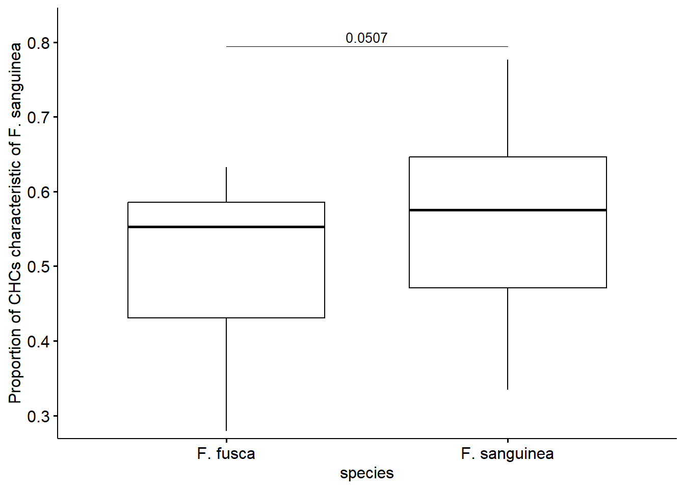
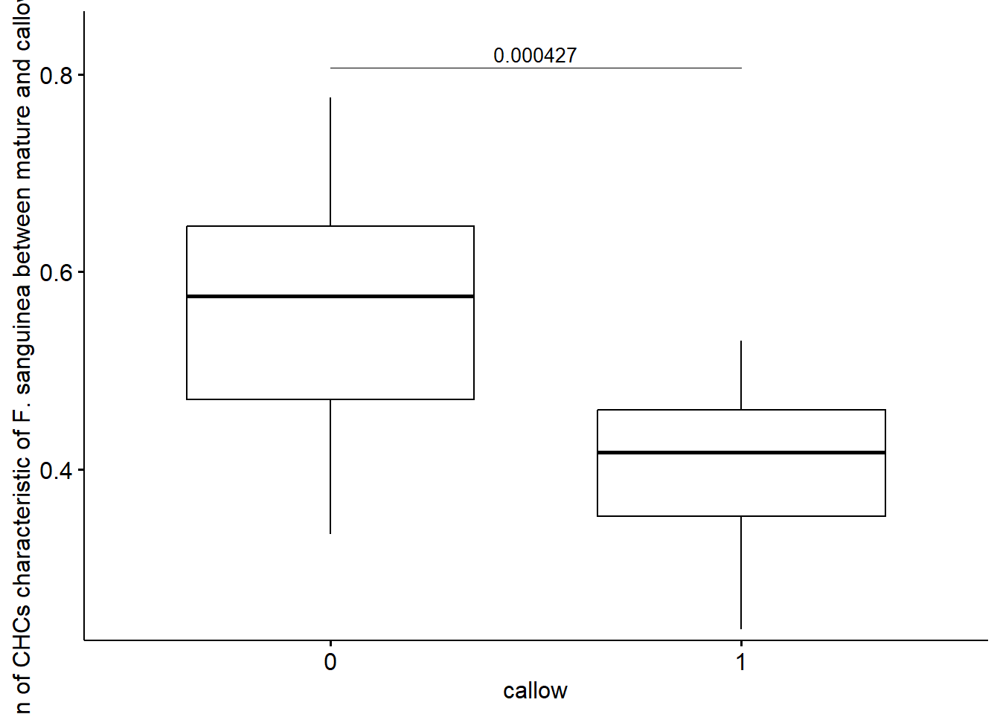
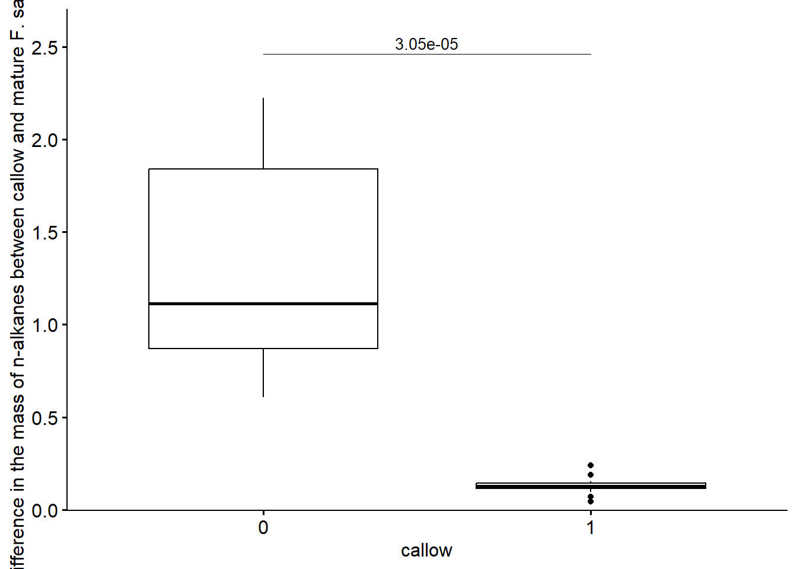

Chapter 5 Comparison of CHC amount and proportions in between different categories of individuals
suppressMessages({
library(sangchem)
library(dplyr)
library(ggpubr)
library(rstatix)
})
# load data
data("development_data")
data("mass_spectra_data")
development_samples <- filter(development_data, caste=="worker", !remarks %in% c("aggression actor", "aggression target", "queenless colony")) %>%
mutate(corrected_mass=mass/head_width^2*10^6) %>%
select(species, census_date, colony, corrected_mass,callow, chromatogram_ID)
load_globals()5.1 Difference in the total CHC amount between callow and mature F. sanguinea
test_data <- filter(development_samples, species == "F. sanguinea")
test_data_mature <- filter(test_data, callow == 0) %>% colony_weighted_mean()
test_data_mature$callow <- 0
test_data_callow <- filter(test_data, callow == 1) %>% colony_weighted_mean()
test_data_callow $callow <- 1
colonies <- intersect(test_data_mature$colony, test_data_callow$colony)
test_df <- rbind(test_data_callow, test_data_mature)
test_df <- test_df[test_df$colony %in% colonies,]
test_df <- test_df[order(test_df$colony),]
wilcox_test(test_df, corrected_mass~callow, paired=TRUE)## # A tibble: 1 × 7
## .y. group1 group2 n1 n2 statistic p
## * <chr> <chr> <chr> <int> <int> <dbl> <dbl>
## 1 corrected_mass 0 1 16 16 136 0.0000305test_df$callow <- factor(test_df$callow)
test_stats <- wilcox_test(test_df, corrected_mass~callow, paired=TRUE) %>%
add_significance("p") %>%
add_xy_position(x="callow", dodge=0.8, fun="max")
ggboxplot(test_df, x="callow", y="corrected_mass")+
scale_y_continuous(expand = expansion(mult=c(0.02,0.1)))+
stat_pvalue_manual(test_stats, label="p", tip.length = 0, size=3.5)
5.2 Difference in the proportion of CHCs characteristic of F. sanguinea between mature F. sanguinea and F. fusca
test_data <- development_samples
test_data$sang_prop <- subsample_proportion(peaks_sang, test_data$chromatogram_ID)
test_data_sang <- filter(test_data, species == "F. sanguinea", callow == 0) %>% colony_weighted_mean(var = "sang_prop")
test_data_sang$species <- "F. sanguinea"
test_data_fusca <- filter(test_data, species == "F. fusca") %>% colony_weighted_mean(var = "sang_prop")
test_data_fusca$species <- "F. fusca"
colonies <- intersect(test_data_sang$colony, test_data_fusca$colony)
test_df <- rbind(test_data_fusca, test_data_sang)
test_df <- test_df[test_df$colony %in% colonies,]
test_df <- test_df[order(test_df$colony),]
test_df$species <- factor(test_df$species)
test_stats <- wilcox_test(test_df, sang_prop~species, paired=TRUE) %>%
add_significance("p") %>%
add_xy_position(x="species", dodge=0.8, fun="max")
ggboxplot(test_df, x="species", y="sang_prop")+
ylab("Proportion of CHCs characteristic of F. sanguinea")+
scale_y_continuous(expand = expansion(mult=c(0.02,0.1)))+
stat_pvalue_manual(test_stats, label="p", tip.length = 0, size=3.5)
5.3 Difference in the proportion of CHCs characteristic of F. sanguinea between mature and callow F. sanguinea
test_data <- filter(development_samples, species == "F. sanguinea")
test_data$sang_prop <- subsample_proportion(peaks_sang, test_data$chromatogram_ID)
test_data_mature <- filter(test_data, callow == 0) %>%
colony_weighted_mean(var = "sang_prop")
test_data_mature$callow <- 0
test_data_callow <- filter(test_data,callow == 1) %>% colony_weighted_mean(var = "sang_prop")
test_data_callow$callow <- 1
colonies <- intersect(test_data_mature$colony, test_data_callow$colony)
test_df <- rbind(test_data_mature, test_data_callow)
test_df <- test_df[test_df$colony %in% colonies,]
test_df <- test_df[order(test_df$colony),]
test_df$callow <- factor(test_df$callow)
test_stats <- wilcox_test(test_df, sang_prop~callow, paired=TRUE) %>%
add_significance("p") %>%
add_xy_position(x="callow", dodge=0.8, fun="max")
ggboxplot(test_df, x="callow", y="sang_prop")+
ylab("Proportion of CHCs characteristic of F. sanguinea between mature and callow F. sanguinea")+
scale_y_continuous(expand = expansion(mult=c(0.02,0.1)))+
stat_pvalue_manual(test_stats, label="p", tip.length = 0, size=3.5)
5.4 Difference in the proportion of CHCs characteristic of callow F. sanguinea between mature and callow F. sanguinea
test_data <- filter(development_samples, species == "F. sanguinea")
test_data$sang_prop <- subsample_proportion(peaks_callow, test_data$chromatogram_ID)
test_data_mature <- filter(test_data, callow == 0) %>%
colony_weighted_mean(var = "sang_prop")
test_data_mature$callow <- 0
test_data_callow <- filter(test_data,callow == 1) %>% colony_weighted_mean(var = "sang_prop")
test_data_callow$callow <- 1
colonies <- intersect(test_data_mature$colony, test_data_callow$colony)
test_df <- rbind(test_data_mature, test_data_callow)
test_df <- test_df[test_df$colony %in% colonies,]
test_df <- test_df[order(test_df$colony),]
test_df$callow <- factor(test_df$callow)
test_stats <- wilcox_test(test_df, sang_prop~callow, paired=TRUE) %>%
add_significance("p") %>%
add_xy_position(x="callow", dodge=0.8, fun="max")
ggboxplot(test_df, x="callow", y="sang_prop")+
ylab("Proportion of CHCs characteristic of callow F. sanguinea\nbetween mature and callow F. sanguinea")+
scale_y_continuous(expand = expansion(mult=c(0.02,0.1)))+
stat_pvalue_manual(test_stats, label="p", tip.length = 0, size=3.5)
5.5 Difference in the amount of CHCs characteristic of callow F. sanguinea between mature and callow F. sanguinea
test_data <- filter(development_samples, species == "F. sanguinea")
test_data$marker_prop <- subsample_proportion(peaks_callow, test_data$chromatogram_ID)
test_data$marker_mass <- test_data$marker_prop * test_data$corrected_mass
test_data_mature <- filter(test_data, callow == 0) %>%
colony_weighted_mean(var = "marker_mass")
test_data_mature$callow <- 0
test_data_callow<- filter(test_data, callow == 1) %>% colony_weighted_mean(var = "marker_mass")
test_data_callow$callow <- 1
colonies <- intersect(test_data_mature$colony, test_data_callow$colony)
test_df <- rbind(test_data_mature, test_data_callow)
test_df <- test_df[test_df$colony %in% colonies,]
test_df <- test_df[order(test_df$colony),]
test_df$callow <- factor(test_df$callow)
test_stats <- wilcox_test(test_df, marker_mass~callow, paired=TRUE) %>%
add_significance("p") %>%
add_xy_position(x="callow", dodge=0.8, fun="max")
ggboxplot(test_df, x="callow", y="marker_mass")+
ylab(" Difference in the mass of callow markers between callow and mature F. sanguinea")+
scale_y_continuous(expand = expansion(mult=c(0.02,0.1)))+
stat_pvalue_manual(test_stats, label="p", tip.length = 0, size=3.5)
5.6 Difference in the proportion of CHCs characteristic of F. fusca between mature F. sanguinea and F. fusca
test_data <- development_samples
test_data$fusca_prop <- subsample_proportion(peaks_fusca, test_data$chromatogram_ID)
test_data_sang <- filter(test_data, species == "F. sanguinea", callow == 0) %>% colony_weighted_mean(var = "fusca_prop")
test_data_sang$species <- "F. sanguinea"
test_data_fusca <- filter(test_data, species == "F. fusca") %>% colony_weighted_mean(var = "fusca_prop")
test_data_fusca$species <- "F. fusca"
colonies <- intersect(test_data_sang$colony, test_data_fusca$colony)
test_df <- rbind(test_data_fusca, test_data_sang)
test_df <- test_df[test_df$colony %in% colonies,]
test_df <- test_df[order(test_df$colony),]
test_df$species <- factor(test_df$species)
test_stats <- wilcox_test(test_df, fusca_prop~species, paired=TRUE) %>%
add_significance("p") %>%
add_xy_position(x="species", dodge=0.8, fun="max")
ggboxplot(test_df, x="species", y="fusca_prop")+
ylab("Proportion of CHCs characteristic of F. fusca")+
scale_y_continuous(expand = expansion(mult=c(0.02,0.1)))+
stat_pvalue_manual(test_stats, label="p", tip.length = 0, size=3.5)
5.7 Difference in the proportion of CHCs characteristic of F. fusca between mature and callow F. sanguinea
test_data <- filter(development_samples, species == "F. sanguinea")
test_data$fusca_prop <- subsample_proportion(peaks_fusca, test_data$chromatogram_ID)
test_data_mature <- filter(test_data, callow == 0) %>%
colony_weighted_mean(var = "fusca_prop")
test_data_mature$callow <- 0
test_data_callow <- filter(test_data,callow == 1) %>% colony_weighted_mean(var = "fusca_prop")
test_data_callow$callow <- 1
colonies <- intersect(test_data_mature$colony, test_data_callow$colony)
test_df <- rbind(test_data_mature, test_data_callow)
test_df <- test_df[test_df$colony %in% colonies,]
test_df <- test_df[order(test_df$colony),]
test_df$callow <- factor(test_df$callow)
test_stats <- wilcox_test(test_df, fusca_prop~callow, paired=TRUE) %>%
add_significance("p") %>%
add_xy_position(x="callow", dodge=0.8, fun="max")
ggboxplot(test_df, x="callow", y="fusca_prop")+
ylab("Proportion of CHCs characteristic of F. fusca in mature and callow F. sanguinea")+
scale_y_continuous(expand = expansion(mult=c(0.02,0.1)))+
stat_pvalue_manual(test_stats, label="p", tip.length = 0, size=3.5)
5.8 Difference in the proportion of CHCs characteristic of F. fusca between callow F. sanguinea and F. fusca
test_data <- filter(development_samples)
test_data$fusca_prop <- subsample_proportion(peaks_fusca, test_data$chromatogram_ID)
test_data_sang <- filter(test_data, callow == 1, species =="F. sanguinea") %>%
colony_weighted_mean(var = "fusca_prop")
test_data_sang$species <- "F. sanguinea"
test_data_fusca <- filter(test_data,species == "F. fusca") %>% colony_weighted_mean(var = "fusca_prop")
test_data_fusca$species <- "F. fusca"
colonies <- intersect(test_data_fusca$colony, test_data_sang$colony)
test_df <- rbind(test_data_sang, test_data_fusca)
test_df <- test_df[test_df$colony %in% colonies,]
test_df <- test_df[order(test_df$colony),]
test_df$species <- factor(test_df$species)
test_stats <- wilcox_test(test_df, fusca_prop~species, paired=TRUE) %>%
add_significance("p") %>%
add_xy_position(x="species", dodge=0.8, fun="max")
ggboxplot(test_df, x="species", y="fusca_prop")+
ylab("Proportion of CHCs characteristic of F. fusca in F. fusca callow F. sanguinea")+
scale_y_continuous(expand = expansion(mult=c(0.02,0.1)))+
stat_pvalue_manual(test_stats, label="p", tip.length = 0, size=3.5)
5.9 Difference in the mass of n-alkanes between callow and mature F. sanguinea
n_alkanes_ID <- unique(mass_spectra_data$peak_ID[grep("^C[0-9]{2}$",mass_spectra_data$identification)])
test_data <- filter(development_samples, species == "F. sanguinea")
test_data$n_alkanes_prop <- subsample_proportion(n_alkanes_ID, test_data$chromatogram_ID)
test_data$n_alkanes_mass <- test_data$n_alkanes_prop * test_data$corrected_mass
test_data_mature <- filter(test_data, callow == 0) %>%
colony_weighted_mean(var = "n_alkanes_mass")
test_data_mature$callow <- 0
test_data_callow<- filter(test_data, callow == 1) %>% colony_weighted_mean(var = "n_alkanes_mass")
test_data_callow$callow <- 1
colonies <- intersect(test_data_mature$colony, test_data_callow$colony)
test_df <- rbind(test_data_mature, test_data_callow)
test_df <- test_df[test_df$colony %in% colonies,]
test_df <- test_df[order(test_df$colony),]
test_df$callow <- factor(test_df$callow)
test_stats <- wilcox_test(test_df, n_alkanes_mass~callow, paired=TRUE) %>%
add_significance("p") %>%
add_xy_position(x="callow", dodge=0.8, fun="max")
ggboxplot(test_df, x="callow", y="n_alkanes_mass")+
ylab(" Difference in the mass of n-alkanes between callow and mature F. sanguinea")+
scale_y_continuous(expand = expansion(mult=c(0.02,0.1)))+
stat_pvalue_manual(test_stats, label="p", tip.length = 0, size=3.5)
5.10 Difference in the proprtion of n-alkanes between callow and mature F. sanguinea
test_data <- filter(development_samples, species == "F. sanguinea")
test_data$n_alkanes_prop <- subsample_proportion(n_alkanes_ID, test_data$chromatogram_ID)
test_data_mature <- filter(test_data, callow == 0) %>%
colony_weighted_mean(var = "n_alkanes_prop")
test_data_mature$callow <- 0
test_data_callow<- filter(test_data, callow == 1) %>% colony_weighted_mean(var = "n_alkanes_prop")
test_data_callow$callow <- 1
colonies <- intersect(test_data_mature$colony, test_data_callow$colony)
test_df <- rbind(test_data_mature, test_data_callow)
test_df <- test_df[test_df$colony %in% colonies,]
test_df <- test_df[order(test_df$colony),]
test_df$callow <- factor(test_df$callow)
test_stats <- wilcox_test(test_df, n_alkanes_prop~callow, paired=TRUE) %>%
add_significance("p") %>%
add_xy_position(x="callow", dodge=0.8, fun="max")
ggboxplot(test_df, x="callow", y="n_alkanes_prop")+
ylab(" Difference in the proportion of n-alkanes between callow and mature F. sanguinea")+
scale_y_continuous(expand = expansion(mult=c(0.02,0.1)))+
stat_pvalue_manual(test_stats, label="p", tip.length = 0, size=3.5)
5.11 Session info
## R version 4.4.2 (2024-10-31 ucrt)
## Platform: x86_64-w64-mingw32/x64
## Running under: Windows 11 x64 (build 22631)
##
## Matrix products: default
##
##
## locale:
## [1] LC_COLLATE=English_Bahamas.utf8 LC_CTYPE=English_Bahamas.utf8 LC_MONETARY=English_Bahamas.utf8
## [4] LC_NUMERIC=C LC_TIME=English_Bahamas.utf8
##
## time zone: Europe/Warsaw
## tzcode source: internal
##
## attached base packages:
## [1] stats graphics grDevices utils datasets methods base
##
## other attached packages:
## [1] rstatix_0.7.2 ggpubr_0.6.0 DHARMa_0.4.7 sangchem_0.0.9000 mixOmics_6.30.0
## [6] ggplot2_3.5.1 lattice_0.22-6 MASS_7.3-61 stringi_1.8.4 dplyr_1.1.4
## [11] lmerTest_3.1-3 lme4_1.1-35.5 Matrix_1.7-1
##
## loaded via a namespace (and not attached):
## [1] RColorBrewer_1.1-3 rstudioapi_0.17.1 jsonlite_1.8.9 magrittr_2.0.3
## [5] farver_2.1.2 nloptr_2.1.1 rmarkdown_2.29 fs_1.6.5
## [9] vctrs_0.6.5 memoise_2.0.1 minqa_1.2.8 base64enc_0.1-3
## [13] htmltools_0.5.8.1 usethis_3.1.0 broom_1.0.7 cellranger_1.1.0
## [17] Formula_1.2-5 sass_0.4.9 bslib_0.8.0 htmlwidgets_1.6.4
## [21] desc_1.4.3 plyr_1.8.9 testthat_3.2.1.1 cachem_1.1.0
## [25] igraph_2.1.1 mime_0.12 lifecycle_1.0.4 iterators_1.0.14
## [29] pkgconfig_2.0.3 gap_1.6 R6_2.5.1 fastmap_1.2.0
## [33] rbibutils_2.3 shiny_1.10.0 digest_0.6.37 numDeriv_2016.8-1.1
## [37] colorspace_2.1-1 rARPACK_0.11-0 ps_1.8.1 rprojroot_2.0.4
## [41] chromConverter_0.7.2 RSpectra_0.16-2 pkgload_1.4.0 ellipse_0.5.0
## [45] qgam_1.3.4 vegan_2.6-8 labeling_0.4.3 abind_1.4-8
## [49] mgcv_1.9-1 compiler_4.4.2 here_1.0.1 remotes_2.5.0
## [53] bit64_4.5.2 withr_3.0.2 doParallel_1.0.17 backports_1.5.0
## [57] BiocParallel_1.40.0 carData_3.0-5 pkgbuild_1.4.5 ggsignif_0.6.4
## [61] HDInterval_0.2.4 sessioninfo_1.2.2 corpcor_1.6.10 permute_0.9-7
## [65] tools_4.4.2 httpuv_1.6.15 glue_1.8.0 callr_3.7.6
## [69] nlme_3.1-166 promises_1.3.2 grid_4.4.2 cluster_2.1.6
## [73] reshape2_1.4.4 generics_0.1.3 gtable_0.3.6 tidyr_1.3.1
## [77] data.table_1.16.4 utf8_1.2.4 car_3.1-3 xml2_1.3.6
## [81] ggrepel_0.9.6 foreach_1.5.2 pillar_1.10.0 stringr_1.5.1
## [85] later_1.4.0 splines_4.4.2 bit_4.5.0.1 RaMS_1.4.3
## [89] tidyselect_1.2.1 miniUI_0.1.1.1 knitr_1.49 gridExtra_2.3
## [93] bookdown_0.41 xfun_0.49 devtools_2.4.5 brio_1.1.5
## [97] matrixStats_1.4.1 yaml_2.3.10 boot_1.3-31 evaluate_1.0.1
## [101] codetools_0.2-20 tibble_3.2.1 cli_3.6.3 xtable_1.8-4
## [105] reticulate_1.40.0 Rdpack_2.6.2 munsell_0.5.1 processx_3.8.4
## [109] jquerylib_0.1.4 Rcpp_1.0.13-1 readxl_1.4.3 png_0.1-8
## [113] parallel_4.4.2 ellipsis_0.3.2 gap.datasets_0.0.6 profvis_0.4.0
## [117] urlchecker_1.0.1 bitops_1.0-9 scales_1.3.0 purrr_1.0.2
## [121] rlang_1.1.4